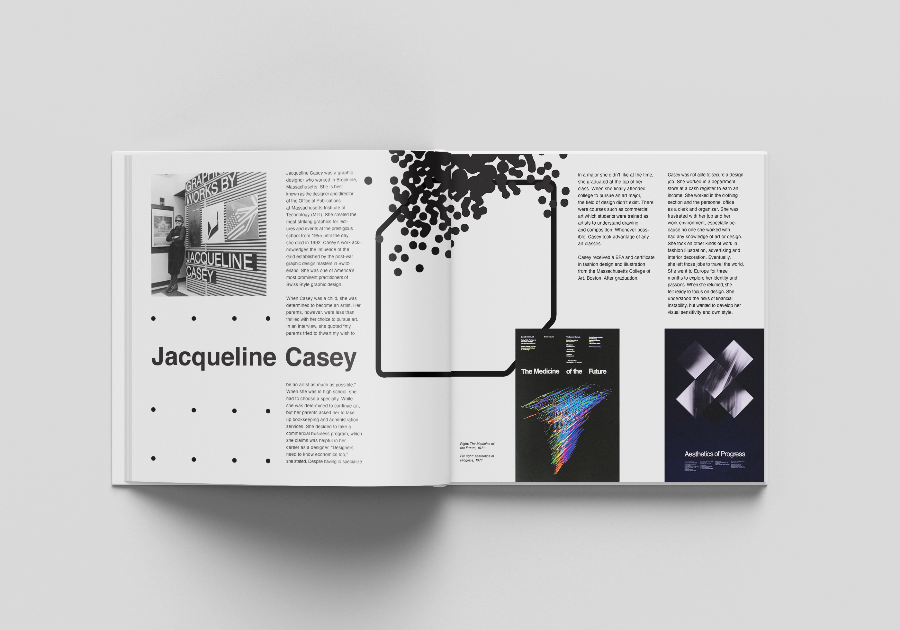

This was an accordion book about 2 female graphic designers: Jacqueline Casey and Tracy Ma. The text was comparing and contrasting the life and design of their work. Writing and design by Eileen Tran. Printed at the Rhode Island School of Design in 2019.
